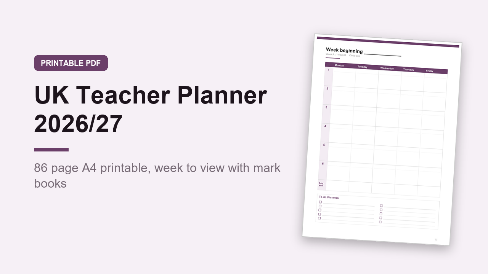

UK Teacher Planner 2026/27, Printable A4 PDF, Week to View and Mark Book
GBP 5.00 · instant digital download

A practical planner for teachers in UK schools, running September 2026 to August 2027.
UK spelling, A4 paper, Year 7 to Year 13, and a two week timetable.
What you get: one printable A4 PDF, 86 pages.
It is not editable, you print it and write on it.
Inside: key information page, year at a glance, a term dates and INSET days page for your own school's dates, England and Wales bank holidays (also shaded on the month pages), Week A and Week B timetables with 6 periods plus registration, break, lunch and after school, a my classes overview, 12 month pages from September 2026 to August 2027, 40 undated week to view lesson planner pages (6 periods a day, a duties and meetings row, and a weekly to do list), 6 class list and mark book pages for 30 numbered pupils and 12 tasks, each with a date and out of row, 6 seating plans, 2 parents' evening logs, a duty rota, a coursework, mocks and deadlines tracker, 2 meetings and CPD log pages, contacts, 4 lined notes pages and 2 grid pages.
The week pages are undated, so you can start any time and keep using them all year.
Print the whole planner for a ring binder, or just the pages you need.
Digital download, nothing is posted..
What happens after you buy
Payment and delivery are handled by Gumroad. You get the download straight after paying, and a copy of the link by email. Nothing is posted to you.
Tags: teacher planner, uk teacher, lesson planner, teacher diary, printable planner, academic planner, school planner, mark book, seating plan, 2026 2027 planner